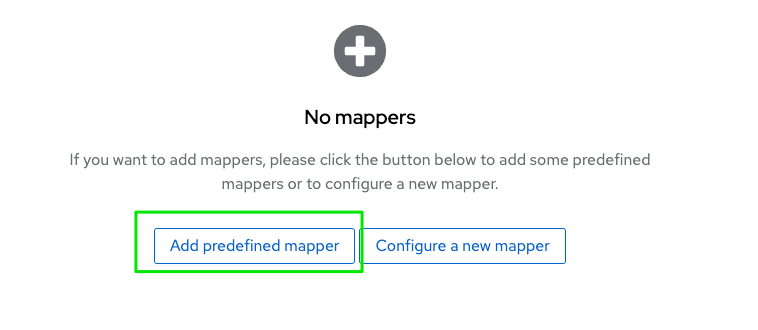
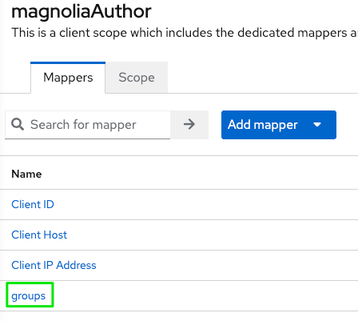

Magnolia SSO and Keycloak on Quarkus
Info
Samples and descriptions are based on Magnolia CMS 6.2.x, Magnolia SSO 2.0.x / 3.0.x and Keycloak 19.0.x.
Using a recent Keycloak distribution
Caution
If you are new to the most recent Keycloak distributions based on Quarkus, or if you just upgraded from a WildFly distribution, there are some things you have to consider. You can find more information on the Migrating to Quarkus distribution pages.
Most important changes in Keycloak to consider
I am not covering changes like how to load configuration at startup time etc., just critical changes regarding the integration with Magnolia SSO.
New default context path (without “/auth”)
Former URLs like the value used for oidc.discoveryUri will not work any longer because the “/auth” part has been removed.
Instead of
oidc.discoveryUri: http://localhost:8180/auth/realms/mgnl/.well-known/openid-configuration
use
oidc.discoveryUri: http://localhost:8180/realms/mgnl/.well-known/openid-configuration
Tip
If you still want/must use the old format (maybe for additional clients you connect to Keycloak), you can start the server with the http-relative-path flag, like bin/kc.[sh|bat] start-dev --http-relative-path /auth.
Adding group membership to the token in Keycloak
To be able to apply appropriate permissions on Magnolia AdminCentral, an external user needs to “bring” some information about group- (role-) memberships after authentication. Otherwise, the Magnolia backend would not be able to resolve correct roles and ACLs.
As the Keycloak administration interface has slightly changed with recent versions, some user might not be able to follow along existing documentation.
Add group memberships of a user to an ID token:
- In Keycloak, select your realm and the client you want to configure (like magnoliaAuthor).
- Choose Client scopes → click on clientName-dedicated.

- Click on Add predefined mapper.

If you already defined mappers for your client, the dialog will look different:
- Click on Add mapper and From predefined mappers.

- Add the groups mapper to your client configuration.

- Select the added groups mapper to review settings.

Magnolia SSO configuration
Caution
Between Magnolia 2.x and 3.x module versions, there have been breaking changes. You need to apply matching configuration for the SSO module version that you are going to use in your project.
Tip
Check the Magnolia documentation pages for details about the module and configuration. Enter “magnolia sso” in the search field to get to the latest documentation. If you don't use the latest version of the module, use the selector to get to the desired variant.
SSO module 2.0.x version
Example config.yaml including groups claim
authenticationService:
path: /.magnolia/admincentral
callbackUrl: http://localhost:8080/magnoliaAuthor/.auth
postLogoutRedirectUri: http://localhost:8080/magnoliaAuthor/.magnolia/admincentral
authorizationGenerators:
groupsAuthorizationGenerator:
class: info.magnolia.sso.oidc.GroupsAuthorizationGenerator
mappings:
superusers:
roles:
- superuser
- rest-admin
travel-demo-editors:
roles:
- security-base
- travel-demo-editor
- workflow-base
- travel-demo-tour-editor
- imaging-base
- travel-demo-admincentral
- resources-base
pac4j:
oidc.id: magnoliaAuthor
oidc.secret: 10ef547b-a13c-4e59-8228-05f2b528d371
oidc.scope: openid profile email
oidc.discoveryUri: http://localhost:8180/realms/mgnl/.well-known/openid-configuration
oidc.preferredJwsAlgorithm: RS256
SSO module 3.0.x version
Example config.yaml including groups claim
path: /.magnolia/admincentral
callbackUrl: http://localhost:8080/magnoliaAuthor/.auth
postLogoutRedirectUri: http://localhost:8080/magnoliaAuthor/.magnolia/admincentral
authorizationGenerators:
- name: groupsAuthorization
groups:
mappings:
- name: superusers
targetRoles:
- superuser
- rest-admin
- name: travel-demo-editors
targetRoles:
- security-base
- travel-demo-editor
- workflow-base
- travel-demo-tour-editor
- imaging-base
- travel-demo-admincentral
- resources-base
clients:
oidc.id: magnoliaAuthor
oidc.secret: duyhpKAFMKWbWTRyFFzk5ysfXbZj2KQd
oidc.scope: openid profile email
oidc.discoveryUri: http://localhost:8180/realms/mgnl/.well-known/openid-configuration
oidc.preferredJwsAlgorithm: RS256
oidc.authorizationGenerators: groupsAuthorization
userFieldMappings:
name: preferred_username
removeEmailDomainFromUserName: true
removeSpecialCharactersFromUserName: false
fullName: name
email: email
language: locale
Example config.yaml with fixed superuser role
Use this for only for initial testing and rescue operations.
path: /.magnolia/admincentral
callbackUrl: http://localhost:8080/magnoliaAuthor/.auth
postLogoutRedirectUri: http://localhost:8080/magnoliaAuthor/.magnolia/admincentral
authorizationGenerators:
- name: fixedRoleAuthorization
fixed:
targetRoles:
- superuser
clients:
oidc.id: magnoliaAuthor
oidc.secret: duyhpKAFMKWbWTRyFFzk5ysfXbZj2KQd
oidc.scope: openid profile email
oidc.discoveryUri: http://localhost:8180/realms/mgnl/.well-known/openid-configuration
oidc.preferredJwsAlgorithm: RS256
oidc.authorizationGenerators: fixedRoleAuthorization
userFieldMappings:
name: preferred_username
removeEmailDomainFromUserName: true
removeSpecialCharactersFromUserName: false
fullName: name
email: email
language: locale
Keycloak-specific configuration
The values for callbackUrl, oidc.id and oidc.scope are coming from your Keycloak OIDC client. Others, like oidc.scope, oidc.discoveryUri and oidc.preferredJwsAlgorithm are the default values for Keycloak according to the OpenID Connect protocol standards.
Keycloak group mapping
Groups delivered as path
Caution
This example does not have the leading “/” before the group names, as shown in the Magnolia documentation. In former Keycloak versions, there was the default option “Full group path” in the protocol mapper (for including the groups claim in the token). As there is no use for Magnolia to receive a single string with several group names, this option is not needed. But if you somehow still are using "full path" groups, then the mapping in config.yaml must be adjusted (/superusers instead of superusers and /travel-demo-editors instead of travel-demo-editors).